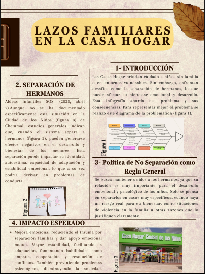

Objetivos del proyecto
El objetivo de este proyecto escolar es crear conciencia a la gente y que apoyen a la comunidad de la casa hogar de Chetumal Quintana Roo ya que los adultos y los niños necesitan ser apoyados a que ellos no cuentan con las mismas oportunidades ni condiciones de vida. Los estudiantes de el cbts 253 se han encargado de brindar apoyo a la casa hogar, brindando nuestro pequeño grano de arena.
Recabar información y analizar para proponer soluciones que logren un cambio significativo generar conciencia y ayuda comunitaria por parte de todos los ciudadanos.
Contexto
Esta página web nace como una evolución de un proyecto previo, el cual consistió en una infografía centrada en una problemática social significativa: la separación de hermanos dentro de las casas hogar. Durante el desarrollo de ese primer trabajo, como equipo nos dimos cuenta del profundo impacto emocional y psicológico que este tipo de separación puede generar en los menores involucrados. Este descubrimiento despertó en nosotros un mayor interés por el tema y nos motivó a seguir investigando para comprenderlo más a fondo. Consideramos que la separación de hermanos en estos contextos no solo afecta el vínculo familiar, sino también el desarrollo emocional, el sentido de pertenencia y la estabilidad de los niños y niñas. A partir de esta reflexión, decidimos ampliar nuestra investigación y enfocarnos en conocer cómo es percibida esta situación por la sociedad en general. Con ese objetivo, diseñamos y difundimos un formulario que nos permitiera recopilar opiniones, experiencias y puntos de vista de diferentes personas sobre este asunto. Esta web reúne el resultado de ese proceso: desde el planteamiento inicial del problema hasta el análisis detallado de las respuestas recolectadas mediante el formulario. Nuestro propósito es generar conciencia sobre la importancia de mantener unidos a los hermanos en el sistema de cuidado institucional, así como dar visibilidad a las voces que opinan y reflexionan sobre esta delicada pero urgente temática.
Información del equipo
Segundo Semestre Grupo "A" de la carrera de Programación
Coordinador general - Herrera Teiu Jose Jesus
Principal lnvestigador - Cano Magaña Carlos Eduardo
Desarrollador wep principal - Cabrera Ricardez Jhonatan Emanuel
Diseñador wep - Mendieta Heredia Angel Daly
Analistas de datos - Escamilla Ascencio Josmar Abdiel
Creador de contenido multimedia - Poot Jiménez Balbino Joele
Redactor de contenido - Hernandez Lucero Carlos Eduardo
Documentalista y verificador - Sanchez Taleno Hector Daniel